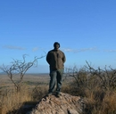

Joaquim Peyré

{kind=link}
expérience
-
2019 : animateur en ALAE à St Jean de Verges (09) organisé par L’EPI 09 (CDI depuis février 2017) (3-11 ans)
2018 : animateur séjour 6-15 ans dans les Pyrénées de deux semaines 2018 : animateur séjour itinérant en Sardaigne (ados) de deux semaines 2017 : animateur en centre de loisirs Montessori La Maison des Enfants à Castelnau-le-Lez (34) en juillet (3-11 ans) 2016 : directeur-animateur sur les temps périscolaires à, Lunel organisés par ODEL (3-11 ans) 2016 : animateur sur un séjour de 10 jours (3-13 août) à Amboise, organisé par Telligo 2016 : directeur adjoint sur un séjour de 14 jours (3-16 juillet) à Magnanville, organisé par Telligo 2016 : stage de directeur adjoint (14 jours), séjour Ski-Snow Petits Montagnards au centre PEP d’Artigue (FOL47) (3-11 ans)
compétences
- Git/Github
- visual studio
- Css
- html
diplômes
-
2016 : BPJEPS LTP (brevet professionnel de la jeunesse, de l’éducation populaire et du sport spécialité loisirs tous publics) avec module de direction
2012-2014 : BTSA Gestion et protection de la nature
2012 : Baccalauréat STAV
2007 : Brevet
2015 : Permis B + voiture personnelle
2012 : BAFA (perfectionement paix et santé)
logiciels
-
Word
Excel
Powerpoint
Gimp
langues
-
français
anglais
Ma formation
-
BPJEPS LTP
BAFA
PERMIS B